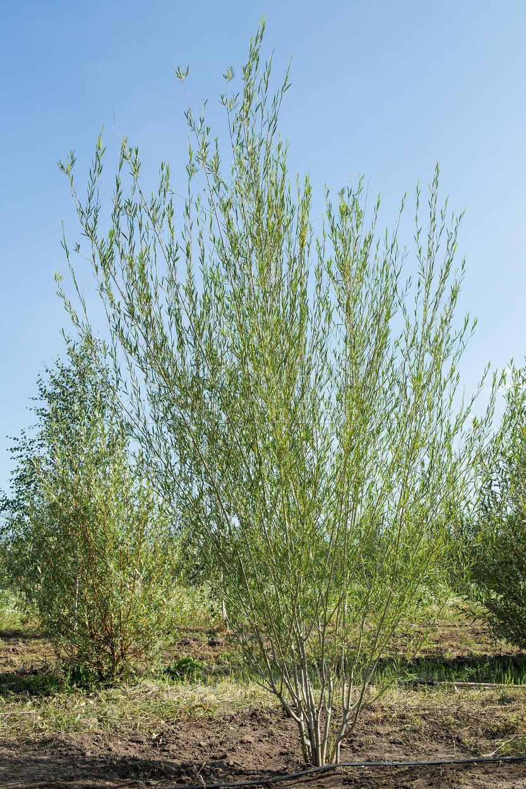
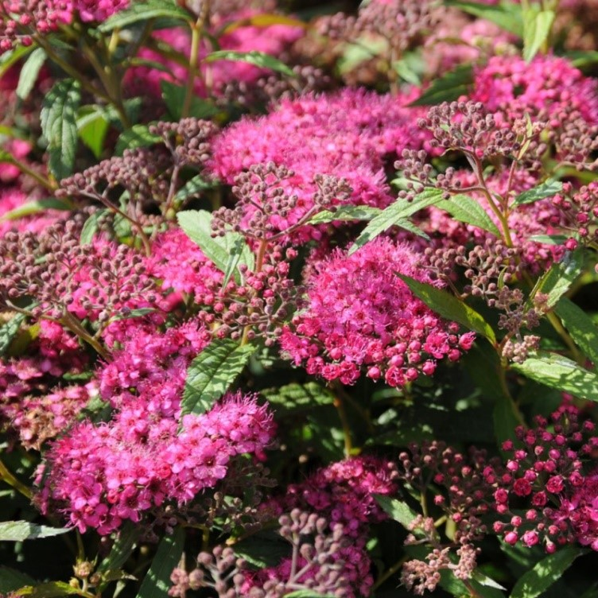
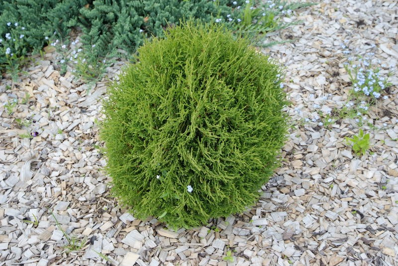

Листопадный кустарник высотой 2-2,5 м. Летом у него декоративны золотистые ли-стья и белые соцветия, зимой - ярко-красные ветви, эффект-но выделяющиеся на фоне белого снега и темно-зеленых хвойных.
Высоту кустарника можно регулиро-вать стрижкой, создавая живые изго-роди или одиночные фигуры. Благодаря золотистому цвету хорошо смотрится одиночно и в группах с зелеными растениями.
Неприхотливый в уходе кустарник, жаростойкий, высокозимостойкий, нетребова-тельный к почвам. Теневыносливый, может расти при частичном затенении, но полностью декоративность проявляется на хорошо освещенных местах.
Дерен белый 'Sibirica variegata'
Один из наиболее эффектных сортов дерена. У его листьев по краям проходит яр-ко-белая кайма, благодаря чему это пестролистное растение не теряет декоратив-ность в течение всего сезона. К зиме его ветви приобретают красную окраску и кра-сиво смотрятся на фоне снега.
Высота кустарника 2,5-3 м, легко регулируется весенней стрижкой с помощью ку-стореза или садовых ножниц. Такая обрезка идет на пользу дерену - омолаживает растение, заставляя в местах среза формировать новые побеги, при этом крона де-лается гуще и красивей. В отличие от дерена белого 'Elegantisima', сорт имеет более приподнятую крону куста.
Кустарник неприхотливый в уходе, засухоустойчивый, очень зимостойкий, нетре-бовательный к почвам и поливу, теневыносливый, может с успехом выращиваться даже в городских условиях.
Ива пурпурная
Изящный декоративный кустарник высотой до 2,5-3 м.
Имеет густые длинные побеги с корой пурпурного оттенка. Листья длинные, сизо-зелёные, цельнокрайние.
Быстрорастущий кустарник, очень зимостойкий, светолюбивый, но выносит и по-лутень. Если провести сильную обрезку (поздно осенью или рано весной), то обра-зует очень плотное красивое полушарие.
Калина красная 'Сладкая Вигорова'
Куст высотой до 4 м. Сорт зимостойкий, устойчив к болезням и вредителям.
Зрелые плоды ярко-красные, округлые, крупные. Масса плода 0,7 грамм.
Урожайность до 8 кг с куста. Самый сладкий сорт калины! Созревает в сентябре.
Лапчатка кустарниковая 'Goldfinger'
Размер куста достигает высоты до 110-130 см. Цветки желтые, крупные, цветение очень продолжительное - с июня по сентябрь. Формирует плотный шаровидный куст, который хорошо смотрится как в одиночных посадках, так и в группе.
Из сорта 'Goldfinger' можно сформировать красивые невысокие живые изгороди, не требующие постоянной стрижки. Но что бы кусты сформировались более плотны-ми, стричь все же рекомендуется - раз в три года ранней весной или поздней осенью куст сильно подстригается, на высоту около 30 см. Это не вредит растению, наобо-рот, активизирует появление новых многочисленных веточек, зацветающих этим же летом. Зимостойкость этого сорта очень высокая.
Лапчатка кустарниковая 'Mount Everest'
Зимостойкий сорт лапчатки кустарниковой с белыми цветками. В отличие от менее зимостойкого сорта лапчатки 'Abbotswood' (иногда подмерзающего выше снежного покрова), у 'Mount Everest' в условиях нашего питомника повреждение морозами не наблюдалось.
Сорт формирует плотный куст высотой 70-90 см и диаметром кроны до 1 м. Цветки у этого сорта относительно крупные (2-3 см), белые. Цветение продолжительное, с начала июня по сентябрь.
Сорт засухоустойчив, светолюбив, но выносит и полутень. Для формирования бо-лее плотного куста рекомендуем периодически (раз в несколько лет) весной или поздно осенью проводить формирующую низкую обрезку.
Пузыреплодник 'Darts Gold' (желтые листья)
Широкий компактный кустарник высотой до 1,5 -2 метров. Листья весь сезон ярко-желтые, в середине лета слегка зеленеют, затем быстро восстанавливается золоти-стая окраска.
Молодые листочки с оранжево-медным оттенком.
В начале июня появляются мелкие белые или слегка розоватые цветки, собранные в плотные щитковидные соцветия.
Плоды — сборные, вздутые листовки, появляются в августе-сентябре и долго со-храняются на кустах.
Пузыреплодник 'Diablo d' Or' (красно-оранжевые листья)
Высота 2,0-2,5 м. куст компактный, плотный. Молодые побеги ярко-красного цве-та. Листья при распускании медно-красные или оранжево-красные, затем постепен-но темнеют, становясь пурпурными, но на верхушках побегов листья остаются оранжево-красными.
Цветет в июне. Цветки небольшие бело-розовые собраны в щитки, расположенные на концах коротких веточек. Плоды - сильно вздутые листовки ярко-красного цве-та.
Пузыреплодник 'Lady in Red'
(ярко-красные листья)
Сорт пузыреплодника с ярко-красной окраской листьев, сохраняющейся в течение всего сезона.
Плотный и широкий кустарник до 1,5 м высотой. Цветет в июне - светлыми бело-розовыми цветками. Неприхотливый быстрорастущий кустарник, очень устойчи-вый к городским условиям, нетребовательный к почве и поливу. Высаживать луч-ше в хорошо освещенном месте, так как в тени листья теряют ярко-красную окрас-ку, становясь более зелеными.
Пузыреплодник является традиционным растением для формированных живых из-городей. Сорт хорошо смотрится в групповых посадках с кустарниками других окрасок.
Пузыреплодник 'Red Baron' (темно-красные листья)
Сорт пузыреплодника с темно-красной окраской листьев, сохраняющейся в течение всего сезона.
Плотный и широкий кустарник до 1,3 м высотой. Цветет в конце весны - начале ле-та белыми цветками. Очень неприхотливый кустарник, устойчивый к городским условиям, нетребовательный к почве и поливу. Высаживать лучше в хорошо осве-щенном месте, так как в тени листья теряют красную окраску, становясь зелеными.
Пузыреплодник является традиционным растением для формированных живых из-городей, при этом использование сорта 'Red Baron' позволяет повысить декоратив-ность изгородей за счет "внесения красок".
Рябинник рябинолистный
Известен своей уникальной морозостойкостью, а также пышными белыми соцвети-ями, которые делают это растение идеальным медоносом.
Эти кусты обладают высотой вплоть до 3 метров, а также раскидистой и пышной кроной до 2,5 метров в диаметре.
Цветы рябинолистного рябинника обладают небольшим диаметром до 1,5 см и со-браны в вытянутые пирамидальные соцветия до 30 см в длину.
Сирень Амурская белая
Декоративна раскидистой кроной с крупными ярко-зелеными листьями, крупными ароматными бело-кремовыми соцветиями.
Высота 6-10 м. Крона раскидистая. Прямые побеги с серой или коричневатой корой с белыми чечевичками. Листья крупные, ярко-зеленые, широкояйцевидные, супро-тивные с заостренными кончиками.
Осенью приобретают красноватые или желтоватые тона. Соцветия крупные, цветки трубчатые бело-кремовые, четырехлопастные с приятным нежным ароматом. Цве-тение продолжительное - около 3-х недель. Зимостойкость высокая.
Форзиция 'Linwood Gold'
Кустарник высотой до 2-3 м и диаметром около 2 м, с тонкими поникающими побегами. и желтоватой корой. Листья супротивные, овальные, ярко-зеленые, осенью окрашиваются в желтые или фиолетовые тона.
Цветет обильно, ежегодно, до распускания листьев, на многолетней древесине, в конце апреля - первой половине мая, продолжительно, около 3-х недель.
Цветки крупные, светло-желтые, пазушные, по нескольку штук вместе, колокольчатой формы, из четырех лепестков. Плод - растрескивающаяся коробочка с несколькими крылатыми семенами. Плоды созревают в октябре. Темп роста средний.
Чубушник махровый
Листопадный прямостоячий кустарник высотой 2-3 м с широкой кроной, бурыми побегами и крепкими ветвями.
Листья супротивные, черешчатые, широкоовальные с заостренной вершиной и крупнозубчатым краем, темно-зеленые, осенью — желтые или красно-бурые.
Цветет обильно в конце июня-июле, 3-4 недели.
Цветки крупные, душистые, мах-ровые, чисто-
белые, собраны в рыхлые кисти по 9-17 штук. Темп роста средний.
Сирень венгерская
Декоративный кустарник высотой до 5 м. Цветы в соцветиях — сиреневые, светло-лиловые или розовые.
Цветение очень обильное, в конце мая – начале июня, длится 20 -25 дней.
Неприхотлива, хорошо разрастается, отзывчива на обрезку.
Чубушник
Чубушник приживается на любом типе почвы. Многолетний красивоцветущий ку-старник, достигающий 3-х метров в высоту.
В июне куст усыпан множественными белыми ароматными цветами.
Предпочитает ярко - освещенные участки сада, в тени может не цвести.
Очень широко чубушник применяется как в композиции с хвойниками, так и в ка-честве живой изгороди.
Неплохо зимует, но если обмерзает, то может восстановиться за счет корневой по-росли.
Ива плакучая Ледебура

Изящное невысокое дерево или кустарник высотой до 3,5 (5) м с широкой, ажур-ной, легкой, полуплакучей кроной и очень тонкими, длинными, раскидистыми, ду-говидно поникающими светло-серыми побегами.
Побеги покрыты беловатым восковым налетом, старые побеги с почти белой корой. Листья узкие, зеленовато-серебристо-серые.
Гортензия метельчатая 'Limelight'
Прочные побеги, которые прекрасно держат крупные зеленовато-белые соцветия. Эта гортензия не требует никаких подставок и подпорок и прекрасно сохраняет форму куста.
Диаметр и высота куста до 2 м.
Листья слегка бархатистые, широкие, зелёные, с выраженной лиловатой осенней окраской.
Широкопирамидальные, очень крупные соцветия (до 25–30см). В начале цветения в тени и на плодородных почвах – зеленоватые (цвета лайма), на солнце – чисто бе-лые, в конце цветения розовеют.
Цветение июль - сентябрь.
Светолюбива, выносит полутень. Предпочитает влажные, плодородные, рыхлые, кислые почвы. Не выносит извести в почве. Зимостойкая.
Кедр сибирский
Кора кедра трещиноватая, чешуйчатая, серо-бурого цвета, покрывает ровный пря-мой ствол. Кедр имеет мягкую хвою (до 14 сантиметров) насыщенного зеленого цвета с сизым налетом.
Шишки около 13 сантиметров в длину, имеют вытянутую форму, чешуйки прижа-тые и плотные, внутри кедровые орешки - очень полезные для организма человека.
Плодоносить сосна кедровая начинает, как правило к 50 годам, привитые формы кедра на 5-7 год жизни.
Можжевельник казацкий, уральская зимостойкая форма
Небольшой кустарник высотой до 1.5 метра, стелющийся по поверхности почвы.
У молодых растений гладкая красновато-серая кора, а взрослых — продольно-трещиноватая. Плоды с сизым восковым налетом.
Светолюбив, засухоустойчив, зимостоек, малотребователен к плодородной почве, устойчив к газам и дыму, обладает почвозащитными свойствами.
Барбарис Тунберга ''Эректа''
Вертикальный кустарник высотой до 1,5м и диаметром кроны до 1м. Листья ярко-зеленого цвета, осенью становятся оранжево-красными. Цветки многочисленные, желтые, с приятным ароматом собраны в кистевидные соцветия по 2-5 шт, появля-ются на кусте в мае месяце. Блестящие овальные плоды красного цвета, обильно усыпают куст, созревают в сентябре и долго не опадают. Предпочитает солнечное местоположение. Хорошо стрижется.
Барбарис Тунберга ''Оранж Рокет''
Высота до 1,2м. Крона колоновидная.
Листопадный медленнорастущий кустарник с крепкими, колючими, вертикально растущими побегами.
Окраска молодых побегов – желтовато-оранжевая с розовым оттенком. Листья об-ратнояйцевидные, слегка сужены к основанию, гладкие, оранжево-красного цвета. Цвет сохраняется с весны до осени, осенью становятся более яркими, ало-красными.
Барбарис Тунберга "Мария"
Высота 0,7-1,5м
Ширина 0,5-1м
Декоративен колонновидной кроной с прямостоячими побегами, золотисто-желтой листвой с осенней оранжево-красной или красно-желтой окраской.
Гортензия древовидная "Аннабель"
Высота - 1,5м
Ширина - 2-3м
Период цветения - с середины июля
до заморозков
Почва - слабокислая
Соцветия - цветки стерильные 2 см
в диаметре,плотно прижаты друг к другу; при распускании бледно-зеленые, затем белые, собраны в шаровидные соцветия диаметром до 25 см
Гортензия метельчатая "Ванилла Фрайз"
Высота - 1,7м
Ширина - 1,5м
Период цветения - с середины июля до заморозков
Почва - слабокислая
Соцветия - огромные до 35см, цветки сначала сливочно-белые, затем розовеют, к концу цветения становятся тёмно-красные.
Гортензия метельчатая Сильвер Доллар
Высота: 2,5м.
Куст красивой формы, соцветия крупные белые, к осени розовеют. Используется в солитерных и групповых посадках в местах отдыха, на газоне, в палисадниках, для создания смешанных с многолетниками посадок.
Цветёт в июле-сентябре
Лапчатка кустарниковая "Белиссима"
Высота: 30см.
Крона разветвленная. Светло-зеленые листья лапчатки Белиссимо со временем, темнеют, приобретают серебристый оттенок и легкое опушение.
Цветки полумахровые, яркие, насыщенно-розовые, крупные, по мере цветения не выгорают. Цветет обильно с середины июня до середины сентября.
Лапчатка кустарниковая "Ред Айс"
Спирея японская "Литтл Принцесс"
Компактный подушковидный кустарник до 0,6 м высотой с очень плотной округ-лой кроной диаметром до 1,2 м,
с мелкой тёмно-зелёной листвой и многочисленными розовыми соцветиями. Цветёт обильно (VІ–VІІ).
Молодые листья бронзового оттенка. Один из самых популярных сортов.
Спирея японская Голдфлейм
Небольшой кустарник высотой до 0,6–0,8 м с плотной округлой кроной диаметром до 0,8 м.
Листья ланцетные, при распускании медно-оранжевые, позднее золотисто-жёлтые и жёлто-зелёные.
Осенняя окраска листьев — медно-оранжевая. Цветки лилово-розовые, собраны в соцветия, густо растущие на всех ветвях (VI–VIII). Популярный, зимостойкий и не-прихотливый сорт.
Спирея японская "Антони Ватерер"

Компактный кустарник высотой и диаметром до 0,8 м, с раскидистой полушаро-видной кроной и множеством прямостоячих побегов.
Листья узкие, плотные, тёмно-зелёные, при распускании красноватые.
Цветки ярко-карминные, собраны в крупные щитковидные соцветия до 15 см в диаметре (VІІ–ІХ).
Зимостойка, в суровые зимы могут подмерзать концы молодых побегов.
Туя западная "Литл Чемпион"

Высота 0,5 м. В молодом возрасте быстрорастущая, затем рост приостанавливается. Форма округлая. Ветви прямые, рыхлые. Хвоя зеленая, коричневеющая к зиме.
Туя западная Вудварди
Крона компактная, плотная, шаровидная, позднее становится куполообразной или округло- яйцевидной и вырастает в высоту до 1,5 метров. Побеги и веточки густые, прямые, плоские. Хвоя чешуевидная, блестящая, темно-зеленая, при распускании с золотистым отливом, зимой - буро-зеленая. Плоды – маленькие коричневые шишки.
Туя западная "Смарагд"
Хвойное дерево с узкой конической плотной компактно-симметричной кроной (диаметр до 1,8 м) и вечнозеленой чешуйчатой блестящей хвоей темного изумруд-ного цвета.
Туя смарагд — типичный представитель туи западной. Её высота достигает до 5 м. Лучший сорт конической туи. Плоды округлой шишковидной формы коричневого цвета размером 0,7 см.
Туя западная "Брабант"
Вечнозеленое дерево высотой до 10-15 метров, диаметр кроны до 3 м. Крона ши-рокоовальная или коническая, в молодом возрасте — густая, позднее становится довольно рыхлой. Хвоя чешуйчатая, темно-зеленая летом, зимой довольно часто приобретает легкий бронзовато-коричневый оттенок.
Корневая система поверхностная с несколькими основными глубокими корнями и разветвленными тонкими боковыми. Цветет в апреле-мае. Шишки коричневые. Растет быстро.